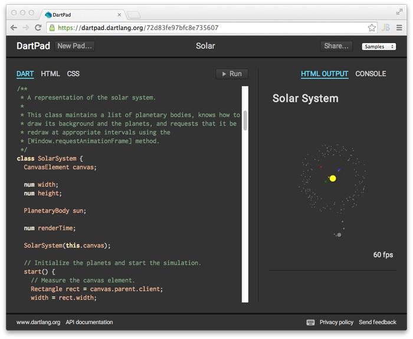

Write Dart
Under an hour
Follow this code lab to create a Dart web app, even if you've never written a web app before.
Write codeDive deep
About 1 day
Dart has lots of tools, libraries, and documentation, plus a developer community.
Learn moreDart runs in modern web browsers and on the server.
Dart is new, yet familiar
Dart’s comprehensive libraries give you lots of choices
Compilation to JavaScript lets you deploy Dart apps now
- Support for all modern browsers
- Tree shaking
- Minifying
Dart web apps run in all modern browsers.

Use lots of libraries? That’s OK. Tree shaking gets rid of the stuff you don’t need.

Shrink your code before you deploy to generate faster-loading JavaScript.

Dart is used to build amazing apps
Dart’s tools help you be productive
With DartPad, you can write and run simple Dart programs in your browser. Once you're ready to get serious, use whichever IDE or editor you like. Dart plugins exist for WebStorm, Sublime Text, and more.
